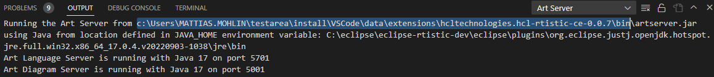

Art Compiler
The Art Compiler is a stand-alone tool which can be used for building a TC from the command-line. Using this tool makes it possible to integrate the translation of Art files into C++, and compilation of that C++ code, into your automated build process.
Location and Launching
The Art Compiler is located in the bin folder of the Code RealTime installation. It's a JAR file with the name artcompiler.jar.
Tip
The folder where the Art Compiler is located can be seen from the message that is printed in the Art Server output channel when the Code RealTime extension is activated. It's located in the same folder as the Art Language Server JAR file, called artserver.jar.

To launch the Art Compiler you need a Java Virtual Machine (JVM). You should use the same JVM as is used for running the Art Language Server (see Setup Java). Launch the Art Compiler with the java command like this:
java <JVM options> -jar <extension-path>/bin/artcompiler.jar <Art Compiler options>
Often you don't need to use any JVM option, but if the application is huge you may need to increase the memory of the JVM. Refer to the documentation of your JVM for a list of available JVM options. You may want to use the same JVM options as are used when launching the Art Language Server (see the setting code-rt.languageServer.jvmArgs), but it's not required to do so.
To test that the Art Compiler can be successfully launched you can try to invoke it without any arguments. You should see an output similar to the below:
C:\openjdk-17\bin\java -jar c:\Users\MATTIAS.MOHLIN\testarea\install\VSCode\data\extensions\secure-dev-ops.code-realtime-ce-1.0.0\bin\artcompiler.jar
10:24:53 : INFO : Art Compiler 1.0.0-20231212_1212
10:24:53 : INFO : Copyright (C) HCL Technologies Ltd. 2022, 2023.
10:24:54 : INFO : Arguments:
Usage: java -jar artcompiler.jar <options>
Options:
LIST OF OPTIONS
All options with argument can be used in format <option> <argument> or <option>=<argument>.
Art Compiler Options
The Art Compiler accepts options in the form of command-line arguments to artcompiler.jar that start with single or double dash (- or --). Many options can take an argument which then needs to be of the correct type (Boolean, Path etc). You can specify the argument for an option either like this
<option> <argument>
or like this
<option>=<argument>
Below is a table that lists all options that are available for the Art Compiler. Each option is described in a section of its own below the table.
| Option | Argument Type |
|---|---|
| buildConfig | String |
| buildVariants | Path |
| cwd | Path |
| generate | N/A |
| help | N/A |
| out | Path |
| ruleConfig | String |
| tc | Path |
| version | N/A |
| ws | Path |
buildConfig
A build configuration is useful when you want to build a TC that uses build variants. It provides values for build variant settings and hence specifies a certain variant of the application to be built. Read more about build configurations here.
buildVariants
Specifies a Build Variants script to use for the build. Read more about build variants here.
cwd
Set the current working directory. By default this is the location from which you launch the Art Compiler. If you use a relative path in options that take a path as argument, such as --out or --tc, the path will be resolved against the current working directory.
generate
By default the Art Compiler will generate C++ files and a make file, and then build the C++ code by invoking make on the make file. If you set this option then only the files will be generated, but make will not be invoked. Usually the running of make is what takes most time when building a TC, so if you for example only is interested in getting the generated files you can save time by setting this option.
help
Use this option to print information about the version and all available options. This is the same information as is printed if launching the Art Compiler without any options. If this option is passed, all other options are ignored.
out
Set the output folder which controls where generated files will be placed. By default it is set to the folder that contains the folder containing the built TC. It hence by default corresponds to the workspace folder used when building from the UI. If you want to place generated files in a different location when building from the command-line you can set this option to another folder. Relative paths specified as targetFolder in TCs will be resolved against the specified --out folder.
ruleConfig
Specifies which validation rules that should be enabled, and what severity the problems they find should have. Rules are configured using the same syntax as is used for the rule_config property in an Art file. For example:
--ruleConfig "W0009,X7001"
Read more about how to configure validation rules here.
tc
Specifies the TC to build. This option is mandatory, unless you only pass the help or version options.
version
Use this option to print the version of the Art Compiler. This version is the same as is used for the Code RealTime extension and can also be seen in the file CHANGELOG.md in the Code RealTime installation folder. If this option is passed, all other options are ignored.
ws
Specifies a workspace file (.code-workspace) which will be used for resolving paths that are relative to the workspace. It's optional to use this option and it only needs to be set if any of the built TCs contain workspace-relative paths.
--ws C:/art-comp-test/validation.code-workspace
Art Compiler Steps and Messages
The Art Compiler performs its work using several sequential steps. During each step messages can be printed with a severity that is either INFO, WARNING or ERROR. Messages are printed to stdout with a time stamp. If at least one error is reported when performing one of the steps, the Art Compiler stops and doesn't proceed with the next step.
The following steps are performed:
- The provided options are parsed and validated
- The TC is evaluated, to compute the values for all TC properties that will be used for the build
- The Art files are loaded, including
RTPredefined.artfrom the Code RealTime installation - The TC is validated, to detect errors and inconsistencies in TC property values
- The Art files are validated, to check for semantic problems
- The Art files are transformed to C++. Generated C++ files and a make file for building them are written to disk.
- A make tool is invoked on the make file for building the C++ code into a library or executable
Note that the last step is skipped if the generate option is set.
Process Return Value
The Art Compiler exits with a zero return value if no errors occur when building the TC. The value will be non-zero in case an error occured and in that case there will also be a printout explaining why the build failed. You can for example use the Art Compiler process return value if you launch it from a script that needs to know if the build was successful or not.